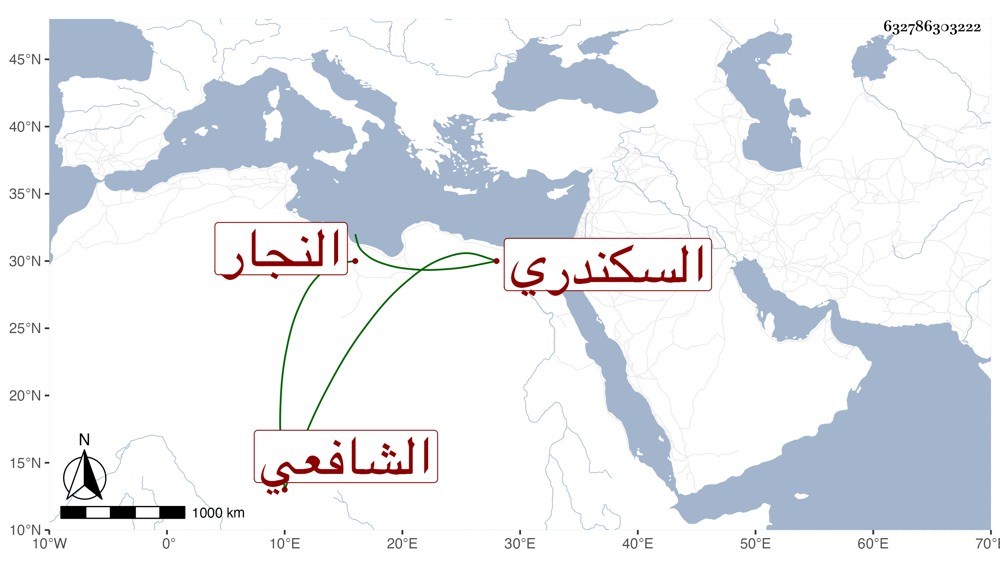

0902Sakhawi.DawLamic.ITO20230111-ara1.EIS1600.632786303222
Biography ID: 632786303222
287
عمر بن سلامة بن عمر بن أحمد السكندري النجار والده ويعرف هناك بابن سيدهم الشافعي الشافعي ، شاب قدم من بلده فلازم الاشتغال عند عبد الحق وخالد الوقاد ونحوهما بل قرأ على الشمس البامي وابن قاسم ولازمني حتى قرأ أكثر البخاري وكذا قرأ على الديمي في مسلم ، وكان فطنا نبيها ذكيا مات سريعا قبل إكمال العشرين في حياة أبويه ليلة الثلاثاء ثاني شعبان سنة تسع وثمانين رحمه الله وعوضه الجنة .
